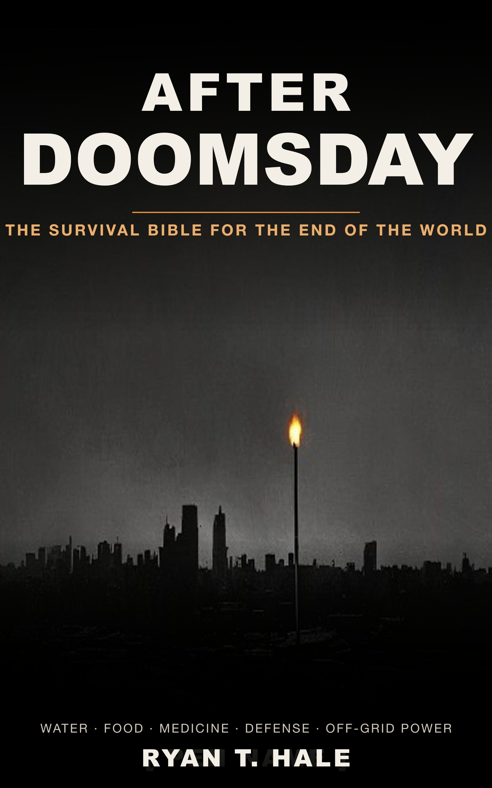

The wealthiest people alive are quietly preparing for collapse. You weren't invited. These guides are how an ordinary person crosses that line anyway.

~250 pages. Water, food, medicine, defense, off-grid power, and how to rebuild when the grid goes dark.
Get it on Amazon Free 72-Hour ChecklistWhy are billionaires building bunkers? Inside the real elite collapse plans, the Golden Billion idea, and why survival comes down to knowledge.
Read →A no-filler bug-out bag checklist organized by survival priority. The few items that earn their weight, the gear to cut, and why skill beats stuff.
Read →More families are quietly preparing in 2026. Here's what the surveys really show, why it's sensible, and how to start calmly this month without fear.
Read →A calm, in-order guide to what to do in the first 72 hours after a collapse: assess the threat, secure water and shelter, and reach your people.
Read →How geopolitical tension touches your pantry, and a calm guide to household readiness in 2026. Build a steady two-week buffer without panic buying.
Read →Boil, disinfect with bleach, use SODIS solar, or distill. Four proven ways to purify water without electricity, plus when to use each one.
Read →Is World War 3 coming? No one can predict it. Here's the calm, low-cost way the prepared think about it, and what to actually do this month.
Read →The pandemic taught households real lessons worth keeping. A calm 2026 guide to a two-week buffer, sick-day plans, and reliable information, no panic.
Read →Recession-proofing your home is financial sense, not fear. A calm 2026 guide to a pantry buffer, an emergency fund, and skills that lower your bills.
Read →Is World War 3 coming? A calm, grounded answer for worried families in 2026, plus how to talk to kids and channel worry into small, useful steps.
Read →